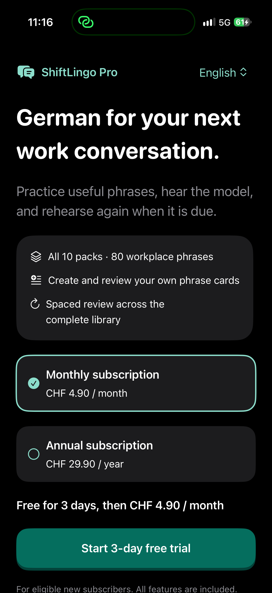
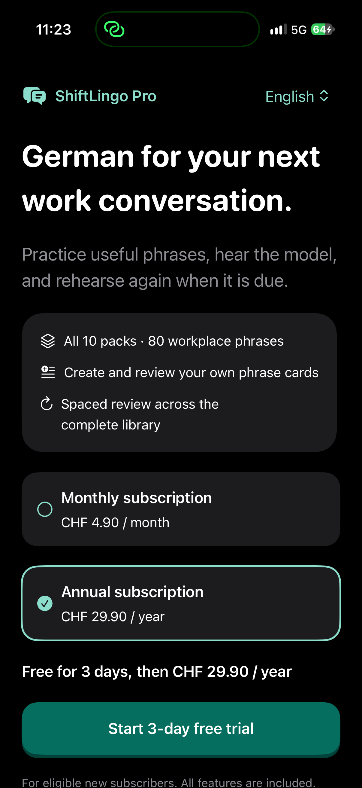

Actual physical iPhone captures of the monthly and annual subscription screen. These captures use unbilled Xcode-local StoreKit with the Swiss storefront. Eligibility and prices in the released app come from Apple's StoreKit. Both plans include all features, with a three-day trial for eligible new subscribers.

